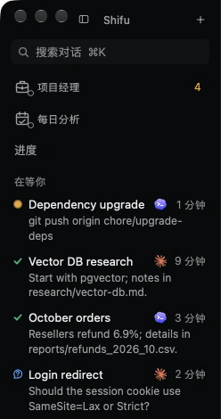
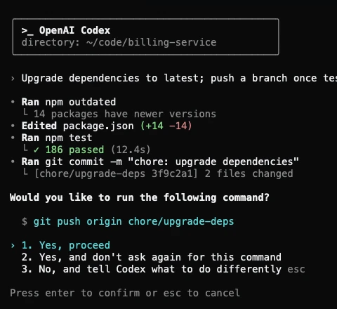

02
Real terminals, not a chat imitation
Each agent runs in its own terminal, with its own interface, shortcuts and prompts. Put several agents in one task and drag tabs to split them side by side or stacked.

Open source · MIT 0.4.4 preview
A macOS workspace for Claude Code, Codex and other coding agents. Run their own terminals side by side, see which one needs you, and jump straight to it.
Apple Silicon only · Early preview · Not notarized · The app window is in Chinese for now
Before your first conversation, Shifu asks once how agents may act, with Agent's own settings preselected; change it any time under Permissions in the new-task form.
Works with Claude Code · Codex · CodeBuddy · Kimi Code · opencode · Antigravity · Pi · Qwen Code · StepFun · Gemini CLI What each one supports →
One agent stopped a while ago to ask for approval, another finished and nobody has looked, a third is asking you a question, and you only find out by clicking through every terminal. Shifu puts them in one window and lists the ones that need you first.
Features
01
The sidebar groups conversations by project and task. For agents with status integration it marks who is running, waiting for approval or waiting for your reply, and the ones that need you collect at the top under “waiting for you”.


02
Each agent runs in its own terminal, with its own interface, shortcuts and prompts. Put several agents in one task and drag tabs to split them side by side or stacked.
03
Agents run in Shifu's own tmux server, not in the window. Quitting and reopening Shifu, or even a Shifu crash, does not stop them, and tasks and split layouts come back.
Restarting the Mac does end the agent processes; when you open a conversation afterwards, agents that support it resume their saved session.
When the Mac sleeps, the agents stop too. While Shifu runs it keeps the Mac from idle sleep by default (the display can still turn off). Closing the lid still puts it to sleep unless you authorize “keep running with the lid closed” once from the cup menu at the bottom right of the window; that mode pauses itself on battery at 10% or when macOS reports the Mac is running hot. Docs (Chinese)
Compatibility
Shifu starts each agent's own CLI with your own account. How much state the sidebar can show depends on whether the agent can report its events to Shifu.
| Agent | Live status | Setup |
|---|---|---|
| Claude Code | Full | Existing CLI |
| Codex | Full | Existing CLI |
| CodeBuddy | Full | Existing CLI |
| Kimi Code | Full | Existing CLI |
| opencode | Full | Existing CLI |
| Qwen Code | Full | Extra setupYour own Qwen Code CLI and a Bailian Token Plan key (setup) |
| Antigravity | PartialDoes not report approval requests, so never “waiting for approval” | Existing CLI |
| Pi | PartialPi has no approval prompts | Existing CLI |
| StepFun | PartialRuns on Pi, so no approval prompts either | Extra setupNode.js 20.6+, a separate Pi 0.73.1 and a Step Plan key (setup) |
| Gemini CLI | Terminal onlyShows only that it is running; reopening starts a new session | Existing CLI |
“Full” means the sidebar shows running, waiting for approval, asking you and done, which feed “waiting for you” and notifications; “Partial” agents never show waiting for approval, and Shifu cannot tell when a “Terminal only” agent stops for you.
How each agent is wired in: the agent table (Chinese). opencode and Pi are shown with neutral letter marks; the other marks belong to their owners.
Open source and privacy
Shifu is MIT-licensed. Download packages are built by GitHub Actions from the public source, with the build source recorded in BUILD-INFO.json inside the package.
Shifu keeps workspace state on this Mac; your agents still talk to their own AI providers under those providers' policies.
No hosted account and no telemetry. State, tasks and layouts stay on your Mac in ~/.shifu/app.
Hooks for Claude Code, Codex and CodeBuddy are passed as launch arguments to the processes Shifu starts, so ~/.claude/settings.json and ~/.codex/config.toml stay unchanged; the status plugins and settings for opencode, Pi, Qwen Code and StepFun live in Shifu's own folder.
Kimi Code and Antigravity read hooks only from a global config: Shifu adds its hooks to ~/.kimi-code/config.toml and a shifu-status group to ~/.gemini/config/hooks.json, keeping your own entries. If the file already exists, it is copied to config.toml.before-shifu / hooks.json.before-shifu in the same folder before the first change.
The phone gateway listens on 127.0.0.1; Mac-to-Mac uses your own HTTPS relay with end-to-end encrypted terminal data. Use a relay whose web client you trust.
Install
Shifu works alongside the coding agents you already use, through their own CLIs and accounts.
Requirements Apple Silicon Mac · tmux · at least one installed, signed-in coding agent
Paste the prompt into Claude Code or Codex. It checks your Mac, downloads and verifies the package from remote-v0.4.4-preview.1 and walks you through setup. Review the commands it runs and handle the system security prompts yourself.
Install Shifu (https://github.com/Nalu-Lab/shifu) for me. Read README.en.md and docs/INSTALL.en.md first. 1. Confirm this is an Apple Silicon Mac. Check that tmux and my chosen agent are installed and signed in; tell me what is missing. 2. Download the ZIP and SHA256SUMS from release remote-v0.4.4-preview.1 (https://github.com/Nalu-Lab/shifu/releases/tag/remote-v0.4.4-preview.1), not any other release. Verify the download and extracted-file checksums. Use the packaged app and CLI by default; do not install Rust or build from source. 3. Follow the package instructions: put Shifu.app in ~/Applications. The app carries its matching CLI for conversation status, notifications and the project manager, so nothing else is needed. Ask me whether I want shifu in a terminal; if so, install the package's bin/shifu to ~/.cargo/bin/shifu, add ~/.cargo/bin to the current shell PATH, verify shifu --help, and explain the full-path option for new terminals. For an existing installation, explain the brief quit needed for the upgrade and preserve the old app, CLI and sessions. Do not overwrite a running app. 4. Explain that the app is signed with Shifu's own certificate and not notarized by Apple, and tell me: Before your first conversation, Shifu asks once how agents may act, with Agent's own settings preselected; change it any time under Permissions in the new-task form. Leave system security prompts to me. Configure StepFun, computer use, a remote relay or background follow-up only if I request them. 5. When it opens, the first screen finds agents and projects: let me tick the projects and decide on the No confirmation switch (off by default, which is Agent's own settings) before pressing Start. On the first Codex launch, let me review its hooks before deciding whether to trust them.
Download the package, verify its checksum and move the app to ~/Applications. It carries its matching shifu CLI; install it separately only to use it in a terminal.
Download the ZIP and SHA256SUMS from the same release. Run shasum -a 256 -c SHA256SUMS in the download directory before extracting.
For an existing installation, quit it and back up the old app and CLI first. The app carries its matching CLI (Shifu.app/Contents/Resources/bin/shifu) for conversation status, notifications and the project manager; the CLI install commands below are only for using shifu in a terminal (tmux is still needed up to 0.4.4). In the extracted package directory, verify its contents, then install the CLI:
Verify on its own first, and continue only when every line says OK:
shasum -a 256 -c SHA256SUMS
Then install the CLI. This block verifies again and changes nothing if verification fails; an existing web folder is renamed as a backup, not deleted:
shasum -a 256 -c SHA256SUMS && ( set -e mkdir -p "$HOME/Applications" "$HOME/.cargo/bin" install -m 755 bin/shifu "$HOME/.cargo/bin/shifu" if [ -e "$HOME/.cargo/bin/web" ]; then mv "$HOME/.cargo/bin/web" "$HOME/.cargo/bin/web.before-$(date +%Y%m%d%H%M%S)"; fi ditto bin/web "$HOME/.cargo/bin/web" # runtime for shifu web ) export PATH="$HOME/.cargo/bin:$PATH" brew install tmux # Skip if tmux is already installed; not needed from 0.4.5 on
After successful verification, move Shifu.app to ~/Applications. Open it: the first screen finds your installed agents and projects; tick the projects and press Start to open your first conversation (or press Skip and use Add Project on the empty page later). Use remote setup and pairing only when connecting another Mac.
The PATH setting only affects the current terminal; in a new one use "$HOME/.cargo/bin/shifu" or add the folder to your shell config.
Installation is complete when your first agent appears in Shifu and you can type in its terminal.
Both routes are the same text as the repository's install guide.
Quick start
Shifu finds the agent CLIs on your terminal's PATH (nvm, volta and bun installs included) and links install pages for the rest.
Run several agents side by side in a task (⌘T). Agents with status integration appear under “waiting for you” when they need you; ⌘J jumps there.

shifu workspace create gives each agent its own Git worktree with a goal and scope, and flags overlapping scopes. One merge command lands the ready branches and lists conflicts or failed checks instead of merging them. Docs →
One task holds several agents; the progress page gives each task its goal, focus and checklist. Docs →
A macOS notification when an agent with status integration waits; opening one conversation clears only its own. Docs →
Claude, Codex, Kimi and CodeBuddy quotas and reset countdowns. Kimi's are queried from Kimi with its local sign-in; the others are read from local records. Docs →
End-to-end encrypted through your own HTTPS relay; a phone connects over your private network. Docs →
shifu computer drives local windows and shifu browser drives web pages; both optional. Docs (Chinese) →
FAQ
shifu opens the workbench, shifu new claude ~/proj starts an agent, shifu ls lists sessions and shifu jump opens a waiting one. The CLI uses its own socket and folder (~/.shifu).
0.4.4 preview · Apple Silicon · Free and open source